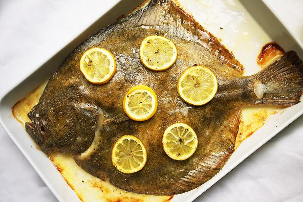
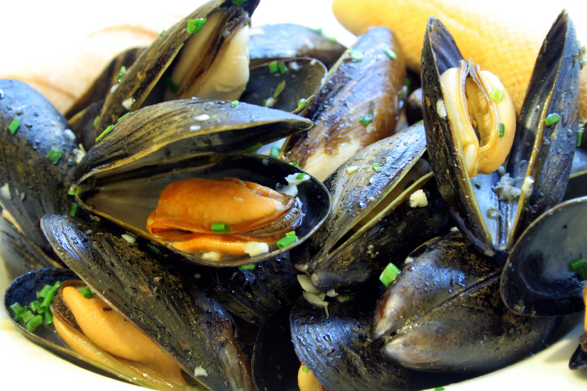
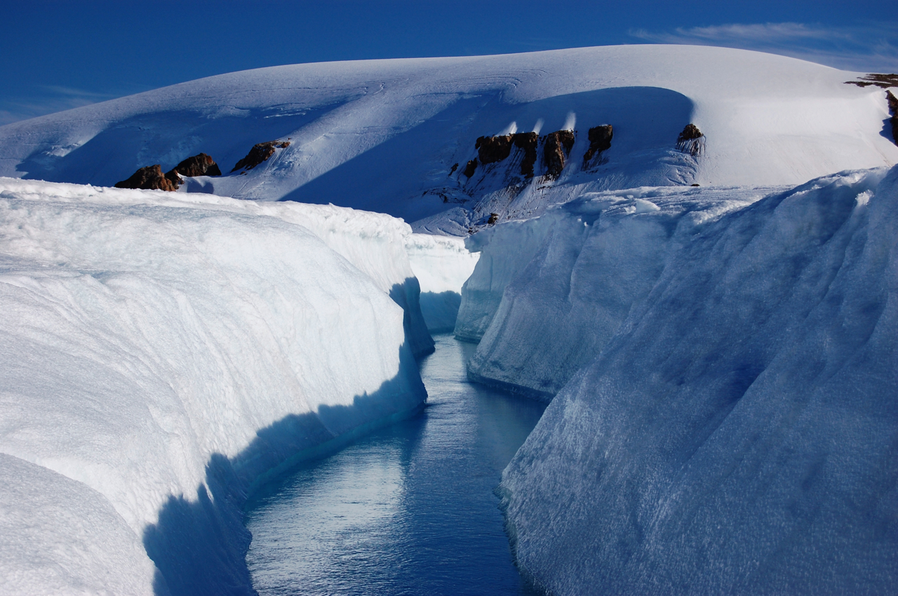

Nunavut Food and Drink
Known as 'country food', the cuisine of Nunavut is mostly based around subsistence living
and products that come from hunting and fishing.
Specialities:
- Arctic char (with a taste somewhere between salmon and trout) is served in many ways
as sampling it stewed, baked or smoked, try it dried for a true northern experience.
- Mussels, scallops (especially from Cumberland Sound), clams, turbot (especially from
the Baffin region)
and Greenland shrimp.
- Musk ox and caribou.
- Local bannock (a simple unleavened bread dough cooked slowly in a frying pan, baked or boiled),
which kept for weeks in an easily transportable form, was a favourite of early Arctic explorers.
- Raw whale blubber and skin, known as maktaaq or muktuk, is a highly prized local speciality
(despite whaling
being frowned upon internationally).
Regional drinks:
Melting glacier ice is collected and provides water in many communities. Bottled water is available.



Mussels In A White Wine Sauce
2 whole garlic cloves -- crushed
2 tablespoons olive oil
1 cup julienned onions
1 pinch red pepper flakes
2 sprigs fresh thyme
1 cup dry white wine
64 mussels - (abt 3 lbs)
2 tablespoons chopped Italian parsley
2 tablespoons butter
2 tablespoons bread crumbs
1/2 cup chicken stock -- (optional)
In a deep skillet, cook the garlic cloves until golden in the olive oil. Add onions and cook until wilted. Add red
pepper flakes, thyme, and white wine, and bring to a boil. Then simmer for 2 minutes.
Add mussels and parsley. Cover tight and cook over medium flame until shells open (approximately 3 to 5 minutes).
Add parsley, butter and bread crumbs, and if the mussels do not have enough juice, you can add chicken stock. Bring all
to a vigorous boil for 2 minutes, shaking the skillet well so that all ingredients mix well.
This recipe yields 4 servings.
Melting glacier ice
Meltwater is the water released by the melting of snow or ice, including glacial ice, tabular icebergs and ice shelves over oceans.
Meltwater is often found in the ablation zone of glaciers, where the rate of snow cover is reducing.
When meltwater pools on the surface rather than flowing, it forms melt ponds. As the weather gets colder meltwater will often re-freeze.
Meltwater can collect or melt under the ice's surface. These pools of water, known as subglacial lakes can form due to geothermal heat
and friction, where the water can then be collected.